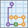

Kavanda marsruudid

Planeeri teekonnad leiab, kuidas efektiivselt jagada ülesanded välitööajate vahel.
Paku tööriistale peatused ja saadaval olevad sõidukid. Tööriist määrab peatused sõidukitele ja tagastab teekonna, mis näitab kuidas iga sõiduk jõuab oma määratud peatusteni vähima aja jooksul.
Teekondade planeerimisega jõuavad välitöötajad rohkemate asukohtadeni vähema ajaga, mis suurendab produktiivsust ja parendab klienditeeninduse kvaliteeti.
- Inspekteeri kodusid, restorane või ehitusplatse.
- Paku hooldustöid, installeerimist või tehnilisi teenuseid
- Vii kohale erinevaid asju ja väiksemaid pakke
- Tee müügitööd
- Transpordi inimesi oma kodudest üritustele
Teekondade planeerimise väljund koosneb peatusi sisaldavast kihist, mis on tähistatud neile määratud teekondadega, teekondade kihist, mis näitab lühimaid teid peatuste külastamiseks, ja määramata peatusi sisaldavast kihist, kui ühegi peatuseni ei jõutud.
Kui Kasuta hetke kaardi kuvaulatust on valitud, siis arvestatakse antud analüüsis ainult kuvaulatuses nähtavaid objekte. Kui vastav tingimus on välja lülitatud, kasutatakse analüüsil kõiki sisendkihis olevaid objekte sõltumata asjaolust, kas need on analüüsi käivitamise hetkel ekraanil nähtavad või mitte.
Marsruutide algus
Täpsusta, kust ja millal sõidukid alustavad oma teekonda.
Teekondade planeerimisega saab täpsustada ühe või rohkem alguspunkte oma sõidukitele.
Kui üks asukohapunkt on täpsustatud, siis alustavad teekonda kõik sõidukid sellest punktist, olenemata saadaval olevate sõidukite arvust . Võid valida punktikihi ühe punktiga või lisada punkti kaardile, valides Lisa punkt kaardile, klikkides külgnevat punkti muutmise nuppu või klikkides kaardil.
Kui täpsustatakse mitu punkti, siis peab määrama igale sõidukile oma punkti. Sõidukite arv peab klappima punktide arvuga kihis. Vali kiht mitme punktiga ja määra väli, mis unikaalselt tuvastab iga teekonna, sõiduki või juhi Teekonna ID väljal rippmenüüst.
Algusaeg on sama kõigile teekondadele. Ajatsoon algusajale on sama, mis alguspunkti ajatsoon, kus punkt paikneb, seega tehke kindlaks, et sisestate kohaliku aja. Näiteks oletame, et Teie ajatsoon on Pacific Standard Time (UTC-8:00) ja Teie juhitavad sõidukid asuvad tsoonis Mountain Standard Time (UTC-7:00). Kui hetkel on 9:30 a.m. PST (10:30 a.m. MST) ja Teie sõidukid peavad alustama teekonda 30 minuti pärast, siis seate algusajaks 11:00 a.m.
Kui teie sõidukid stardivad erinevatest ajatsoonidest, siis nende algusaeg ei saa olla üheaegne – selle asemel on need nihkes. Näiteks kui üks teekond algab punktist tsooniga PST ja teine teekond algab MST ning alguseks on sisestatud 11:00 a.m., siis PST stardib kell 11:00 a.m. PST ja teekond MST stardib 11:00 a.m. MST—ühe tunnilise vahega.
Marsruutide lõpp
Täpsusta, kust ja millal sõidukid lõpetavad oma teekonna.
Võite konfigureerida teekonnad lõppema ühest kolmest asukohast:
- Teekonna alguspunktist, olenemata kas sõidukid startisid ühest või enamast asukohast
- Ühes asukohas
- Mitmes asukohas – üks lõpp-punkt igale teekonnale
Märgista Tagasi algusesse kui sõidukid alustavad ja lõpetavad teekonna samas punktis.
Selleks et juhtida kõik sõidukid samasse lõpp-punkti, eemalda märgistus Tagasi algusesse ja kas lisa punkt kaardile või vali kiht, mis sisaldab täpselt ühte punkti.
Et teekonnad lõppeks unikaalsetes asukohtades, eemalda märgistus Tagasi algusesse ja vali kiht, mis sisaldab rohkem kui ühte punkti. Sõidukite arv peab klappima punktide arvuga valitud kihis. Valikus Teekonna ID väli rippmenüüst vali väli, mis unikaalselt tuvastab individuaalse teekonna, sõiduki või juhi. Kui sõidukid stardivad mitmest asukohast ja lõpetavad teekonna mitmes erinevas asukohas, siis valitud teekonna ID numbrid peavad klappima alguse ja lõpu kihtides.
Maksimumarv sõidukeid marsruutide leidmiseks
Täpsusta sõidukite arv, mis on saadaval peatuste külastamiseks. See tööriist toetab kuni 100 sõidukit.
See tööriist võib olla võimeline leidma lahendusi, mis kasutavad vähem sõidukeid kui täpsustatud number, arvestades kogu peatumiste arvu, lubatud peatuste arvu sõiduki kohta, peatuste kaugust, peatuses kulutatud aega, kogu teekonnale seatud piiranguid sõiduki kohta.
Maksimumarv peatuseid sõiduki kohta
See on üks kahest parameetrist, mis tasakaalustab üleüldist töökoormust üle kõigi teekondade. Võid täpsustada väärtuse vahemikus 1 kuni 200.
Langetades maksimaalselt peatuste arvu sõiduki kohta, suureneb tõenäosus et sõidukitele määratakse võrdne arv peatuseid. See aitab tasakaalustada töökoormust juhtide vahel. Samas võib see põhjustada tulemuse, mis on vähem efektiivne.
Tõstes sõidukile lubatud maksimaalset peatuste arvu, omab tööriist rohkem vabadust, leidmaks efektiivsemaid lahendusi, kuid samas võib töökoormus olla ebavõrdsemalt jaotatud juhtidele ja sõidukitele. Pange tähele, et saate tasakaalustada töökoormust peatuste arvu või aja järgi, kasutades Piira kogu teekonna aega sõiduki kohta parameetrit.
Järgnevad näited kirjeldavad piiravaid maksimaalsete peatuste arvu ja sõiduki kohase kogu teekonna aja efekte. Kõigis näidetes on kuus peatust ja kaks teekonda, mis algavad samast punktist.

|
Tasakaalustatud sõiduajad ja peatused teekonna kohta Peatused on rohkem või vähem ühtlaselt jaotatud, seega maksimaalsete peatuste võrdne jagamine muudab keskmiselt sama pikaks ka kestvuse. |

|
Tasakaalustatud peatused, tasakaalustamata sõiduajad Viis kuuest peatusest on klasterdatud alguspunkti lähedale, aga üks punkt on kaugemal ja nõuab pikemat sõiduaega sinna jõudmiseks. Jagades peatused võrdselt kahe teekonna vahel, tekib tasakaalutust sõiduaegades. |
|  |
Tasakaalustamata peatused, tasakaalustatud sõiduajad Peatused on samas asukohas nagu eelmisel pildil, aga tõstes maksimaalsete peatuste arvu teekonna kohta ja piirates sõiduaega sõiduki kohta, sõiduajad tasakaalustatakse. |
Igas peatuses kulutatav aeg
Seadista oodatav keskmine teenuse aeg igas peatuses Näiteks planeerides inspektoritele tööpäeva plaani ja keskmise inspekteerimise ajaga 45 minutit, sisesta väärtus 45.
Teenuse aeg igas peatuses on eeldatavalt sama.
Piira kogu marsruudiks kuluvat aega sõiduki kohta
Täpsusta maksimaalne aeg teekonna läbimiseks alguspunktist lõpp-punkti. See sisaldab oodatavat sõiduaega ja teenuse pakkumise aegu peatustes üle teekonna. Kui juhid ei tohiks töötada rohkem päevas kui kaheksa tundi, siis selle peaks täpsustama just siin.
Vaata abi Maksimaalne arv peatusi sõiduki kohta arvestamaks tasakaalustatud töökoormuseid.
Tulemkihi nimi
See on kihtide grupi nimi, mis luuakse Minu sisu alla ja lisatakse kaardile. See kihtide grupp sisaldab järgnevaid kihte: teekonnad, peatused, juhised.
Kasutades Salvesta tulemused rippmenüüd, saate täpsustada kausta nime Minu sisu all, kuhu tulemused salvestatakse.